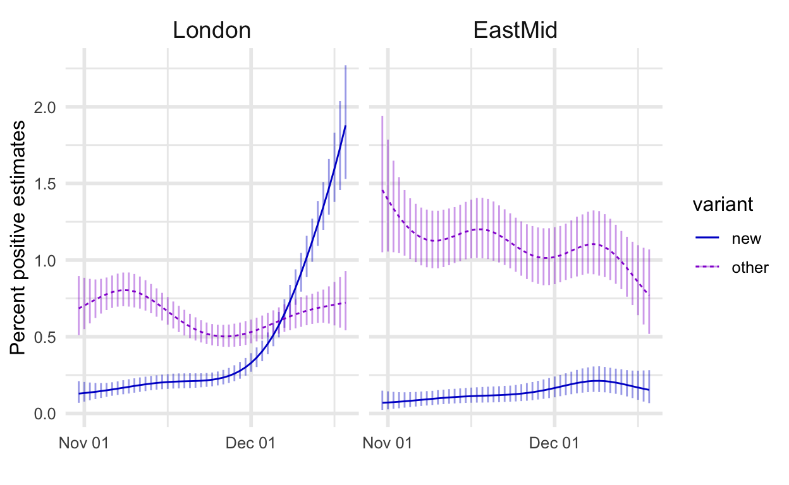
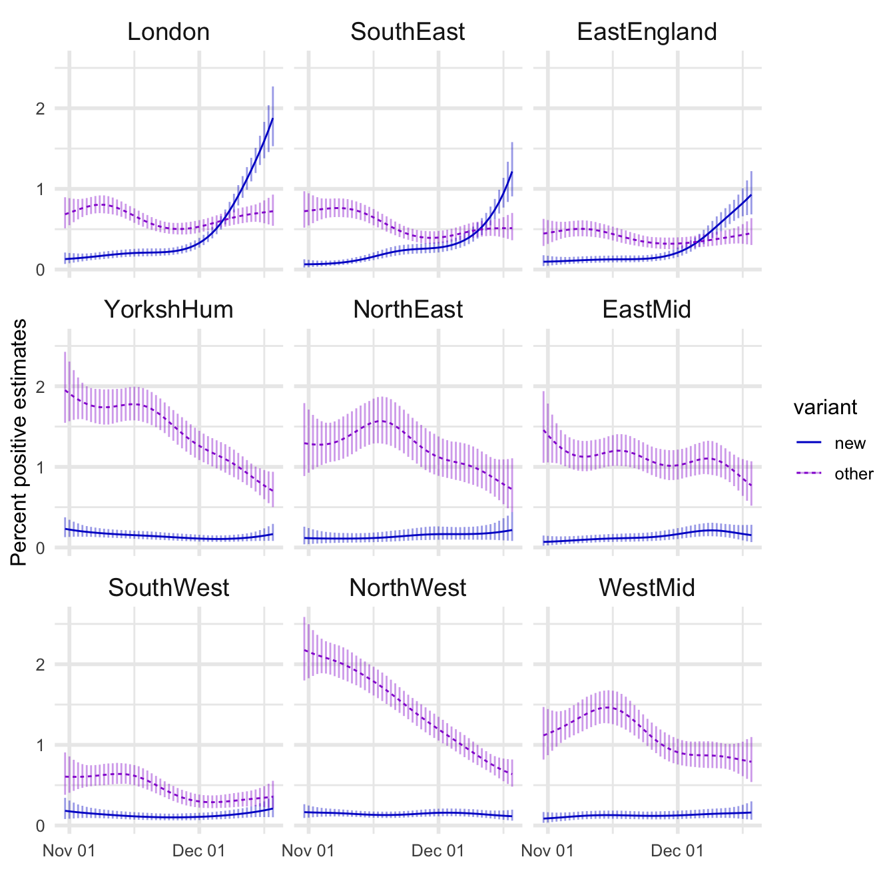
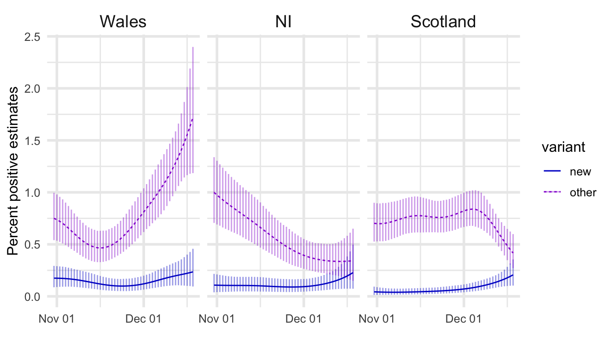
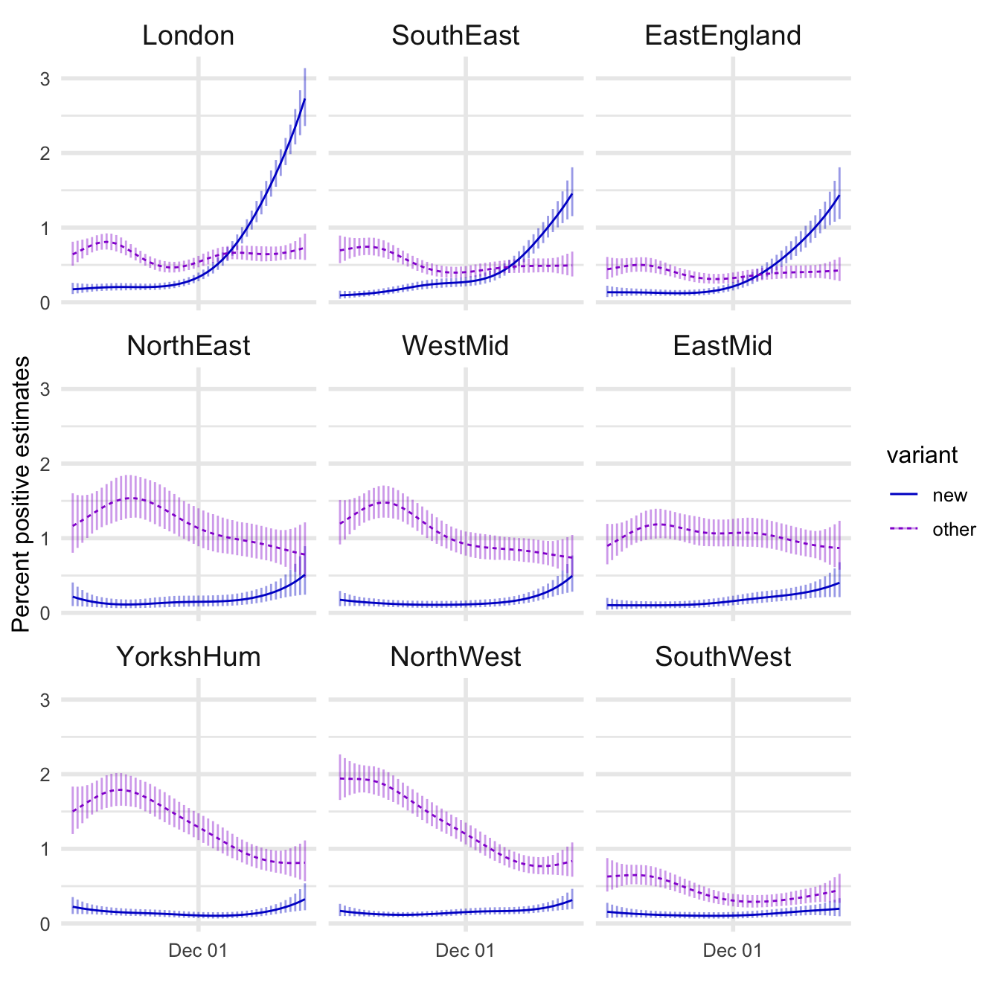
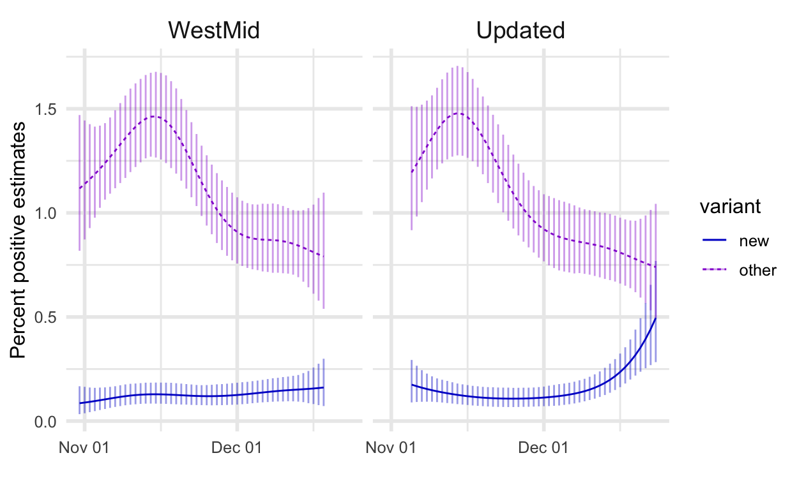

TL;DR
- A new strain of COVID-19 has spread rapidly in some regions, particularly London
- Some scientists believe the strain has a biological advantage that makes it more transmissible
- I believe there are non-biological explanations for these observations
- In other regions the new strain has not spread rapidly, which is consistent with my theory
- We have to slow the spread regardless and should focus on what does that most effectively
The new strain narrative
In the present context much has been made of the potential danger of the new variant of SARS-Cov-2. As reported in Science,
One reason to be concerned, Rambaut says, is that among the 17 mutations are eight in the gene that encodes the spike protein on the viral surface, two of which are particularly worrisome. One, called N501Y, has previously been shown to increase how tightly the protein binds to the angiotensin-converting enzyme 2 receptor, its entry point into human cells.
When this story broke my initial reaction was skepticism. I thought this new strain could just be a random genetic marker that coincided with an outbreak of cases that was caused by behavior (or even “chance”) rather than by any important biological differences. We have more sophisticated measurement capability for biological data than for social data, and I worry that not enough has been done to rule out social explanations. For example, despite cases rising dramatically since September mobility indices have remained above the levels they saw in June, which were significantly higher than their April lows. So the UK’s November lockdown only temporarily slowed large scale community spread and did not get it under control.
We already know that people are changing their behavior. Schools reopened. We did not need any special biological explanation for why cases have continued increasing. As we’ll see below, the most rapid increase has occurred in London where the estimated percent of the population testing positive has likely surpassed 2%. For comparison, most entire states in the US probably have higher rates. This is not to downplay the importance of taking measures to prevent the spread, but rather to question the necessity for any additional explanations (mutant strain) on top of what we already knew.
There is some evidence to suggest my initial theory is wrong and that these mutations are causally important. South Africa has seen a new strain with a similar mutation recently become the dominant strain while case numbers have increased even though it is currently summer there. I still think I may be right, and that data recently released in the UK reinforces my theory.
The last bit of background about the detection of this new strain also helps explain this data. From the Science article above:
A fortunate coincidence helped show that B.1.1.7 (also called VUI-202012/01, for the first “variant under investigation” in December 2020), appears to be spreading faster than other variants in the United Kingdom. One of the polymerase chain reaction (PCR) tests used widely in the country, called TaqPath, normally detects pieces of three genes. But viruses with 69-70del lead to a negative signal for the gene encoding the spike gene; instead only two genes show up. That means PCR tests, which the United Kingdom conducts by the hundreds of thousands daily and which are far quicker and cheaper than sequencing the entire virus, can help keep track of B.1.1.7.
In other words, tests already being done in the UK can help identify whether a test result is consistent with being the new variant of COVID. I think this “fortunate coincidence” is actually the explanation for why the new variant became such a big story. You can see by watching this animation (press play) that different strains are always appearing and becoming more or less prevalent. This one happened to be easier to track, so certain decision makers (like NERVTAG, which includes no statisticians) saw this and conflated correlation with causation.
So let’s look at these estimates of the percent of the UK population testing positive, broken down based on whether the test result is consistent with the new strain or otherwise.
Getting the data (don’t read this)
We can download data with estimates of COVID-19 infection rates from the Office of National Statistics (which uses random sampling and adjusts for differential response with MRP, hence the smooth-looking curves in the graphs below). Unfortunately this data is stored in an excel spreadsheet (an abhorrent practice), so I’m showing my code below in case anyone else would like to access this data programmatically
library(tidyverse)
download_filename <- "covid_positivity.xlsx"
download.file(
url = paste0(
"https://www.ons.gov.uk/file?",
"uri=/peoplepopulationandcommunity/",
"healthandsocialcare/conditionsanddiseases",
"/adhocs/12708covid19infectionsurveyorf1abn",
"positivityrates/orf1abnmodellingadhoc.xlsx"),
destfile = download_filename)
c19rates <- readxl::read_xlsx(download_filename,
col_names = FALSE,
sheet = "Data",
range = "A6:BI54")
deleted <- file.remove(download_filename)
names(c19rates) <- c("date",
do.call(paste,
expand.grid(
c("positive", "lower", "upper"),
c("new", "other"),
c("England", "NorthEast", "NorthWest", "YorkshHum", "EastMid",
"WestMid", "EastEngland", "London", "SouthEast", "SouthWest"))
))
c19_long <- c19rates %>%
pivot_longer(!date) %>%
separate(col = name, sep = " ",
into = c("est", "variant", "region")) %>%
pivot_wider(names_from = est, values_from = value)
Positivity rate plots for UK regions
First let’s see the rates in two regions, the one where the new strain grew most rapidly and another region where it hasn’t.

Next, here are all the regions sorted (top left to bottom right) in the order of the maximum estimated prevalence of the new strain.

Conclusion
If the new strain has a biological advantage that makes it more transmissible why isn’t it taking over in every region? This is not a rhetorical question. One real possibility is that only some of the test results that are consistent with the new strain actually are the new strain, and other ones are similar but don’t have the same set of important mutations. If this were true then regions where the new strain hasn’t taken over could just be places where it has not yet reached, or reached recently enough that it’s still early, i.e. these regions are a month or so behind London in the trajectory for the new strain.
And let me repeat: none of this should be taken as skepticism about the importance of taking actions to control the spread of the pandemic. Whether this new strain is more transmissible or not, we already know there is continued widespread community transmission. We already know that millions more could suffer horribly, and die, and that our emergency and healthcare systems and economies will be devastated if this virus is allowed to spread out of control. We already knew that more action was necessary to slow the spread before we learned of this new variant. Still, the question of whether or not this new variant is more transmissible is important as a matter of scientific accuracy and public trust.
To be clear, I haven’t done the work of spelling out an alternate, behavioral explanation. Some have tried, but there just isn’t much good data available for that purpose. For example, mobility data apparently doesn’t show differences in activity levels between London and other parts of the UK throughout the relevant time period. Such data is incredibly coarse and not guaranteed to surface behavioral differences that could be important causal explanations.
Instead of thinking about what data is available and convenient to access (like the mobility indexes), ask yourself what kind of social information you would like to know if it were included as a question in the ONS COVID infection survey. Does the household have any contacts with schools? Where do household members work? Has anyone eaten indoors at a restaurant in the last week? Questions like these linked with actual test results, rather than aggregated by region in a mobility index, could be of tremendous help in tracking down how the virus is spreading and figuring out how to slow it down. There’s almost no cost to simply asking a few more questions on a survey compared to the cost already going toward tests. It seems the only reasons this has not been done are a reluctance to know the answers to such questions (from e.g. desire to keep schools or restaurants open) and a reliance on big dumb data instead of intentional scientific thinking and deliberate study design.
Supplemental plots
To be comprehensive I’ll also show the previous plots for the (separate) dataset that includes Scotland, Wales, and Northern Ireland.
download_filename <- "covid_positivity_SWNI.xlsx"
download.file(
url = paste0(
"https://www.ons.gov.uk/file?uri=",
"/peoplepopulationandcommunity/",
"healthandsocialcare/conditionsanddiseases/",
"adhocs/12711coronaviruscovid19infectionsurvey",
"orf1abnmodellingscotlandwalesandnorthern",
"ireland/orf1abnmodellingadhocscotlandwales",
"andnorthernireland.xlsx"),
destfile = download_filename)
c19rates <- readxl::read_xlsx(download_filename,
col_names = FALSE,
sheet = "Data",
range = "A6:S54")
deleted <- file.remove(download_filename)
names(c19rates) <- c("date",
do.call(paste,
expand.grid(
c("positive", "lower", "upper"),
c("new", "other"),
c("Scotland", "Wales", "NI"))
))
c19_long <- c19rates %>%
pivot_longer(!date) %>%
separate(col = name, sep = " ",
into = c("est", "variant", "region")) %>%
pivot_wider(names_from = est, values_from = value)
new_regions <- c19_long %>%
filter(variant == "new") %>%
group_by(region) %>%
summarize(max = max(positive))
c19_long_plot_SWNI <- c19_long %>%
left_join(new_regions, by = "region") %>%
mutate(region = fct_reorder(region, desc(max)))

And as a reward for anyone who scrolled this far, the most extreme comparison: Wales and London.

New data update
The ONS has released new data up to 23 December so I’m updating this post. The new data shows more increases in the percent compatible with the new variant across England, which is now more consistent with the theory of increased transmissibility. However there is not yet any new data for Scotland, Wales, and Northern Ireland, so we can’t see if the trend is different now in Wales.

This new data also comes with revisions of the previous data, this is perhaps most obvious by looking at the West Midlands region.

I have not yet seen the explanation for this but it could reflect the addition of back-dated test results and/or updates to parameters of the MRP model that adjusts survey responses.
In summary:
- New estimates are more consistent with the new variant being more transmissible
- I still think it’s inconclusive. I’d like to see the explanation for the revision of previous numbers, and continue to watch other regions (including Wales, and other countries where the new variant has been detected)
- And as before, this information isn’t really necessary to know that more effective actions are required to stop the spread of (all strains of) the virus